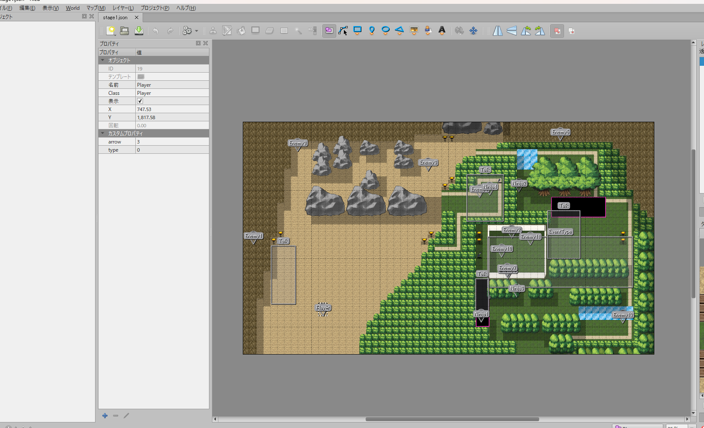
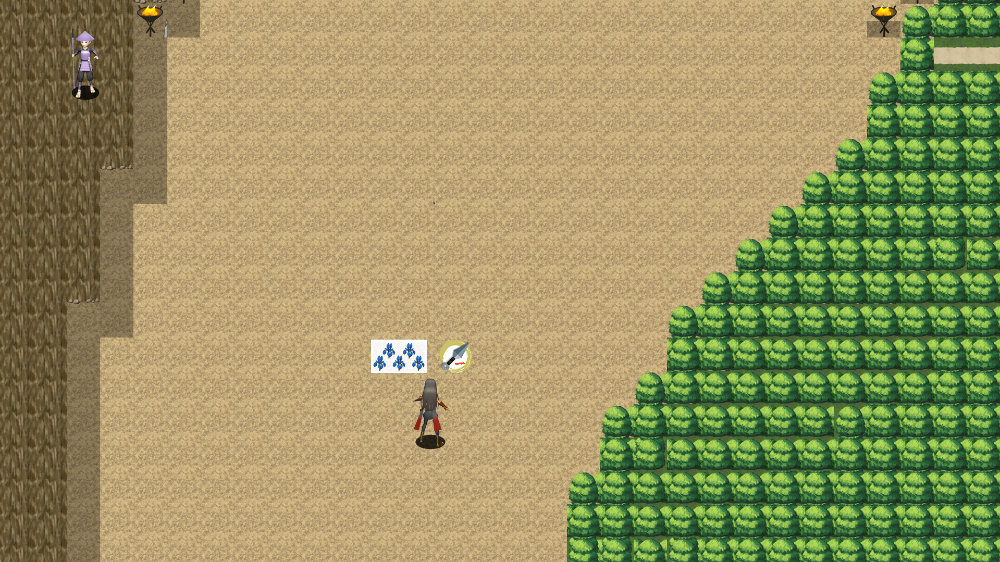

乱世見聞記

担当箇所
プログラム全般
この作品のゲームロジック、敵AI、当たり判定、画面遷移、演出・サウンド制御などプログラム全般を1人で全実装しました。
作品リンク
アピール箇所
頑張った・こだわった箇所
1.敵AI

障害物を回避して最短距離でプレイヤーを追跡する処理を実装しました。
当時「最短距離探索」はまだ習っておらず、理想の敵AIを実現するために講師の方へ相談し、アドバイスをもとに実装しました。
プレイヤーを動くゴールとし、当たり判定があるマップチップの判定調整を重ねることで、スムーズな追跡処理を完成することができました。
当初は「発見した敵のみが追従する」仕様でしたが、ステルスゲームとしての緊張感を高めるため、自身でアイデアを提案・実装しました。一匹でもプレイヤーを発見すると、画面内の全敵へ即座に警戒状態が共有され、一斉に追跡を開始する仕組みへ昇華させました。
2.タイトル画面

当初の仕様にはありませんでしたが、和風ゲームとしての世界観やクオリティを向上させるため、桜が舞う演出を追加実装しました。
1000枚の花びらをスムーズに描画できるようオブジェクトプールを利用し、メモリ負荷を抑えつつ乱数処理によって風や揺らぎのある自然な舞い落ち方を表現しました。
タイトル画面への遷移時に、複数のボイスから1つを選出して再生する処理を実装しました。
作品の世界観やキャラクターの魅力を引き立てると同時に、タイトル遷移時の音声リソースの読み込みと解放を安全に行う設計にこだわりました。
3.Tiledを活用したレベルデザイン

① Tiledでの設定画面（パラメータ・イベントボックス配置）

② 実際のゲーム画面（JSONロードによる配置の再現）
プレイヤーのタイプやオブジェクト初期位置をTiledで指定することで、ステージ設計をプランナーの方でもできる仕組みを構築しました。
特定エリアへの進入でシナリオや会話イベントが発生する「イベントボックス」を構築しました。Tiled上で領域の大きさや位置を配置・調整できるようにしました。